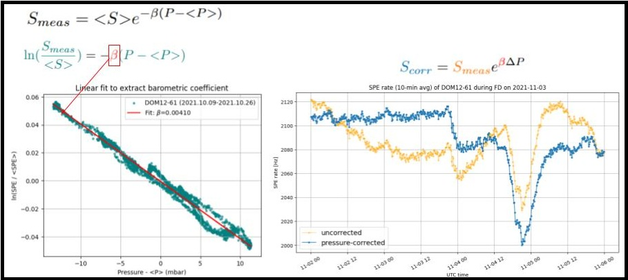
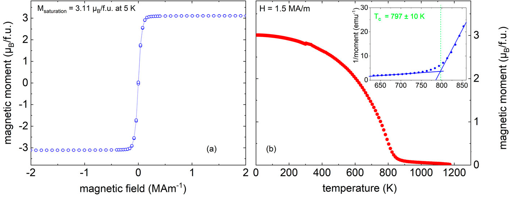
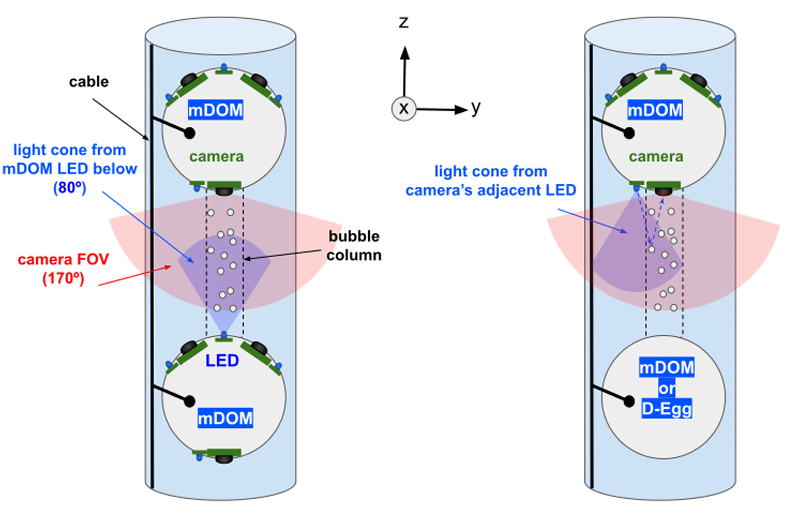
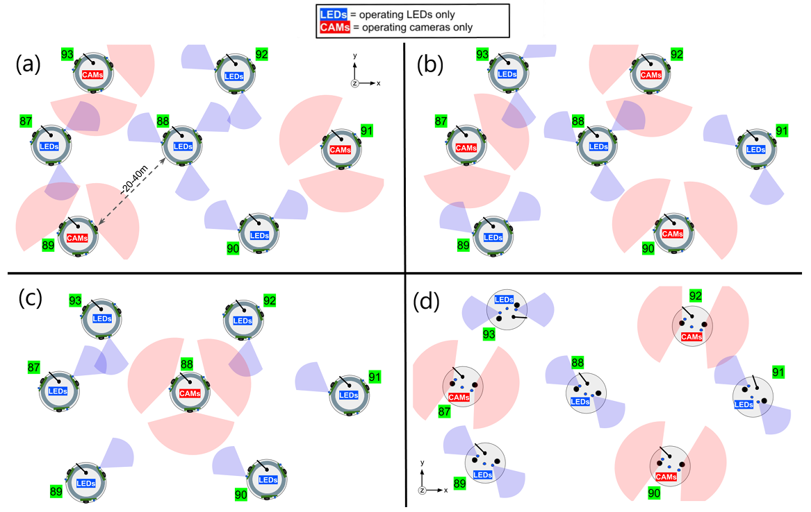
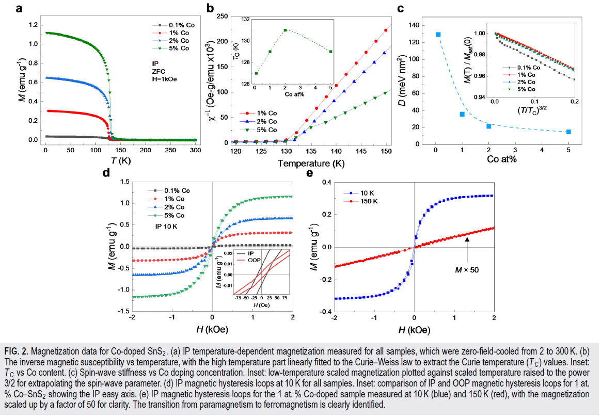
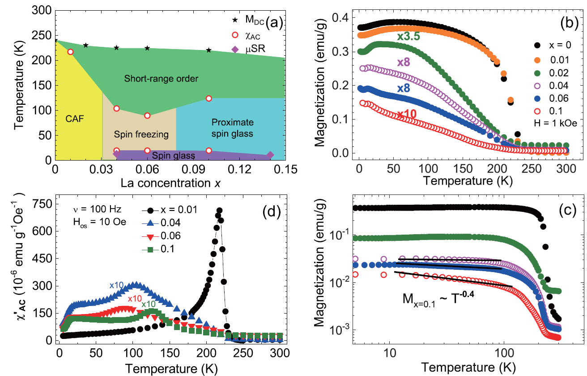
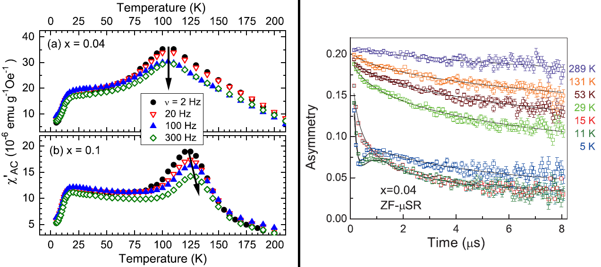

Publications
Download my COMPLETE publications list here:
Steven_Rodan_publications_20260311
Selected Journal Publications
- Solar Flare Modulation of IceTop Count Rates During Forbush Events Observed by the South Pole Neutron Monitor
Steven Rodan, [The IceCube Collaboration]
Draft in preparation (anticipated 2026)

- Material Design Towards a Thermodynamically Stable Co-Cr-Fe-Al Heusler-Type Phase
A. Omar, F. Börrnert, M. Richter, J. Trinkauf, F. Heinsch, C.G.F. Blum, V. Romaka, Steven Rodan, et al.
APL Materials 13, 051118 (2025)

- Operations plans and sensitivities of the IceCube Upgrade Camera System
Steven Rodan, Christoph Tönnis, Jiwoong Lee, Carsten Rott
The 38th International Cosmic Ray Conference (ICRC2023), PoS at arXiv:2308.07276


- Enhanced magnetic moment with cobalt dopant in SnS\(_2\) semiconductor
H. Bouzid, Steven Rodan, K. Singh, Y. Jin, J. Jiang, D. Yoon, H.-Y. Song, Y.-H. Lee
APL Materials 9, 051106 (2021)

My contribution: I had co-first-authored this paper with a then-graduate student on the characterization of a dopant-induced high Curie-temperature ferromagnetic state in non-magnetic SnS\(_2\) van der Waals semiconductor.
- Quantum critical nature of the short-range magnetic order in Sr\(_{2 - x}\)La\(_x\)IrO\(_4\)
Steven Rodan, Sungwon Yoon, Suheon Lee, Gareoung Kim, J.-S. Rhyee, A. Koda, W.-T. Chen, Fangcheng Chou, K.-Y. Choi
Phys. Rev. B 98, 214412 (2018)


My contribution: I synthesized the crystal samples, performed physical characterization measurements, and traveled to the JPARC facilities to perform muon spin rotation experiments to probe the magnetic dynamics in the quantum critical material.
Half-Metallic ferromagnetism with unexpected small spin splitting in the Heusler compound Co\(_2\)FeSi
D. Bombor, C.G.F. Blum, O. Volkonskiy, Steven Rodan, S. Wurmehl, C. Hess, B. Büchner
Phys. Rev. Lett. 110, 066601 (2013)Nuclear magnetic resonance reveals structural evolution upon annealing in epitaxial Co\(_2\)MnSi Heusler films
Steven Rodan, A. Alfonsov, M. Belesi, F. Ferraro, J.T. Kohlhepp, H.J.M. Swagten, B. Koopmans, Y. Sakuraba, S. Bosu, K. Takanashi, B. Büchner, S. Wurmehl
Appl. Phys. Lett. 102, 242404 (2013)
My contribution: I performed the NMR measurements, using a setup that I helped commission, on both bulk crystals (grown by me) and thin films provided by collaborators.